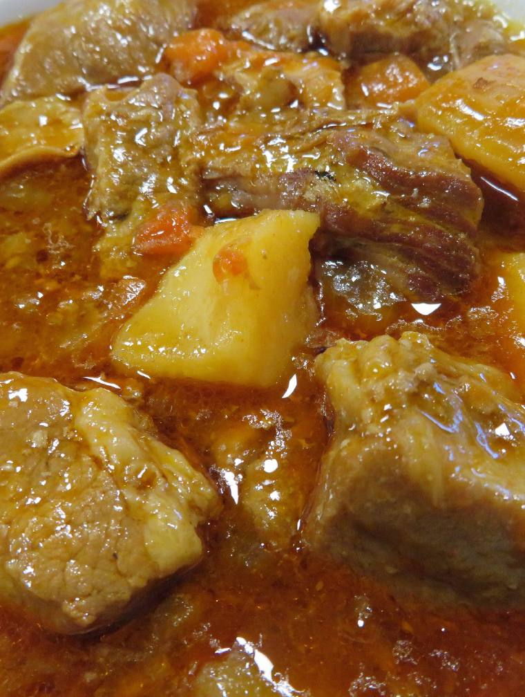

Cuisine espagnole

Cuisine espagnole
Estofado de ternera
L’estofao, le bœuf à l’étouffée
Préparation : 30 min
Cuisson : 2 h
Ingrédients (pour 6 personnes)
- 1 kg de veau ou jeune bœuf à braiser, en dés
- 2 oignons
- 2 carottes
- 1 gousse d’ail
- 15 cl de vin rouge
- 500 g de bouillon de viande
- 1 feuille de laurier
- 100 g de petits pois (facultatif)
- farine, huile d’olive, sel, poivre
- persil, pommes de terre frites en dés pour servir
Quantités adaptées. Les temps de cuisson ne sont pas recalculés.
- Saler, poivrer et fariner la viande, la dorer dans l’huile très chaude, réserver.
- Dorer oignons hachés, carottes en rondelles et ail.
- Remettre la viande, mouiller au vin, laisser réduire.
- Ajouter bouillon et laurier, mijoter 1 h 30 ou plus, jusqu’à ce que la viande s’effiloche.
- Ajouter les petits pois 15 minutes avant la fin. Servir avec les dés de pommes de terre et le persil.
D’après la Real Academia de Gastronomía. Traduit et reformulé, verre de vin converti.